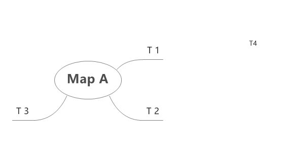
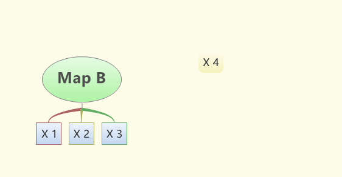
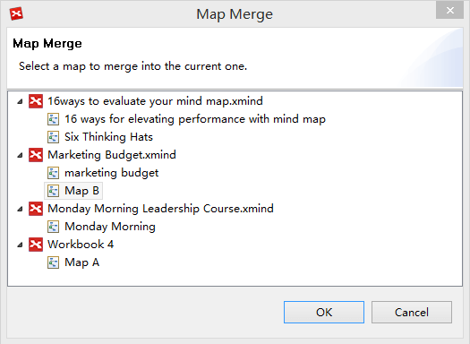
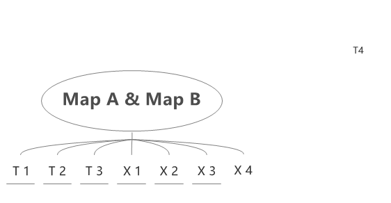

Merge
The Merge functionality can help us to organize the information from more than one map by merging two maps together. In this example, Map A will be merged with Map B.
- Open Map A and Map B.
- Choose 'Tools > Merge..' on the menu
- Select Map B on the merging dialog.
- Click 'OK' and you can see the merged map.
- 
- 
- 
- 
Merge Rules
- Map A and Map B should both be opened in XMind, which can be in different workbooks.
- Topics with the same text content in the same level under the same parent will be treated as identical topics; identical text inside the corresponding topic on Map A will be replaced by the text on Map B.
- Topics with different text contents will be treated as different topics. If a topic on Map B does not exist in Map Q, then it will be copied to Map A under the corresponding parent.
- Pressing "Ctrl+Z" can undo the merge process.